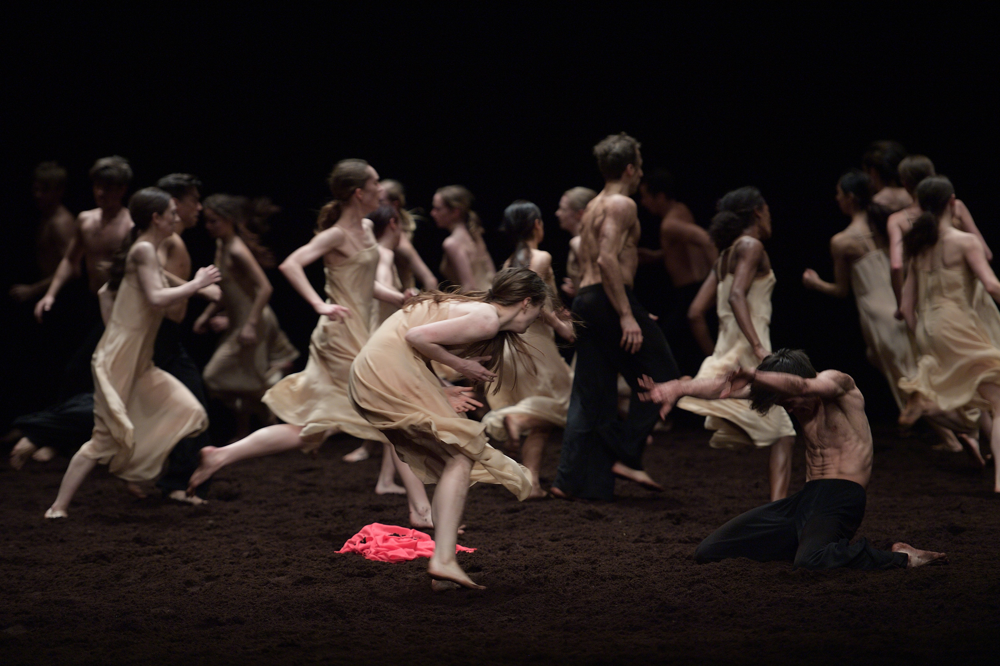

Pina Bausch was a German dancer and choreographer who was a significant contributor to a neo-expressionist dance tradition now known as Tanztheater. She was born 1940 in Solingen and died 2009 in Wuppertal. She received her dance training at the Folkwang School in Essen under Kurt Jooss, where she achieved technical excellence. Soon after the director of Wuppertal's theatres, Arno Wüstenhöfer, engaged her as choreographer, from autumn 1973, she renamed the ensemble the Tanztheater Wuppertal. Under this name, although controversial at the beginning, the company gradually achieved international recognition. Its combination of poetic and everyday elements influenced the international development of dance decisively. Awarded some of the greatest prizes and honours world-wide, Pina Bausch is one of the most significant choreographers of our time.
Pina Bausch has been awarded many prizes and accolades for her work, including the New York Bessie Award in 1984, the German Dance Prize in 1995, the Berlin Theatre Prize in1997, Japan's Praemium Imperiale in 1999, Monte Carlo's Nijinsky Prize, the Golden Mask in Moscow in 2005 and the Goethe Prize of the city of Frankfurt in 2008. In June 2007 she was presented with the Venice Biennale Golden Lion for her life's work and in November that year she was awarded the highly respected Kyoto Prize. In 1997 the German government honoured her with the Order of Merit of the Federal Republic of Germany, the French with the title Commandeur de l'Ordre des Arts et de Lettre in 1991 and Chevalier de la Légion d'Honneur in 2003. Several universities have awarded her an honorary doctorate.
Most famous works
Filmography

References